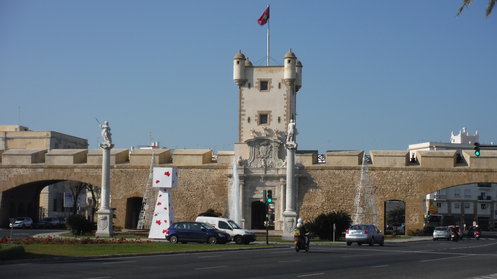
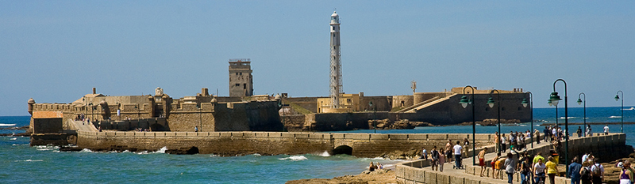
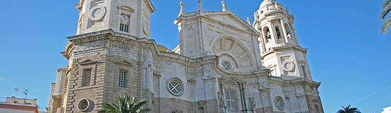

Lugares monumentales e históricos
Puerta de Tierra

La puerta de Tierra es un monumento arquitectónico que supone un reducto de la que fuera muralla de entrada a la ciudad de Cádiz, Andalucía, España. Levantada por el arquitecto academicista Torcuato Cayón en el siglo XVIII, la portada está labrada en mármol y está concebida más como retablo religioso que como fortificación militar.
Es uno de los monumentos más significativos de la ciudad que separa, en la actualidad, el Casco Antiguo (conocido popularmente como "Cádiz" o "Cádiz Cádiz") y la zona moderna (conocida popularmente como "Puerta Tierra" o "Extramuros") de la ciudad.
Castillo de San Sebastián

El castillo de San Sebastián es una fortaleza de la ciudad de Cádiz ubicada en uno de los extremos de la playa de La Caleta sobre un pequeño islote.
En su interior se encuentra un Laboratorio de Investigación Marina de la Universidad de Cádiz.
Según la tradición clásica, en este islote se encontraba el Templo de Moloch/Kronos.
En 1457, en el islote se levantó una ermita por los tripulantes de un barco veneciano que se recuperaban de la peste. En 1706 se iniciaron las obras de construcción de un castillo que dio lugar a un recinto fortificado de planta irregular y que defendía el flanco norte de la ciudad. En su interior y sobre la base de una torre-atalaya musulmana se levanta el actual faro, una estructura de hierro diseñada por Rafael de la Cerda en 1908, el segundo eléctrico de España y 41 metros sobre el nivel del mar.
Es interesante destacar que en 1811 llegó en carácter de prisionero de guerra el marino maltés, al servicio de la Junta insurrecta de Buenos Aires, Juan Bautista Azopardo. Fue alojado en la fortaleza hasta 1815 año en el cual ante la sospecha de una fuga fue trasladado a la prisión militar de Ceuta.
En 1860 se construyó un malecón que sirve de nexo entre la isla y el casco urbano de la ciudad. El 25 de junio de 1985 se declara Bien de Interés Cultural.
Catedral de la Santa Cruz de Cádiz

La Santa y Apostólica Iglesia Catedral de Cádiz es la sede episcopal de la diócesis de Cádiz y Ceuta, en España. Es un edificio de estilo barroco y neoclásico. Se empezó a construir en 1722 y no se terminó hasta el 28 de noviembre de 1838.
Recibe el nombre de la "Santa Cruz sobre el Mar" o "Santa Cruz sobre las Aguas", aunque los gaditanos la denominan catedral Nueva en contraposición a la catedral Vieja, edificada en el siglo XVI sobre la antigua catedral gótica mandada construir por Alfonso X El Sabio, y que hoy cumple las funciones de iglesia parroquial
Está situada en el centro histórico de Cádiz, casi al borde del mar, y es visible desde casi cualquier punto de la ciudad. Tiene horario de visitas tanto para el interior del templo como para la Torre del Reloj. La misma entrada a la catedral sirve para acceder al museo Catedralicio, situado en la plaza Fray Félix, junto a la catedral Vieja.